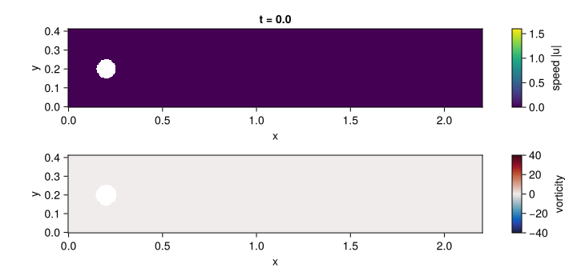
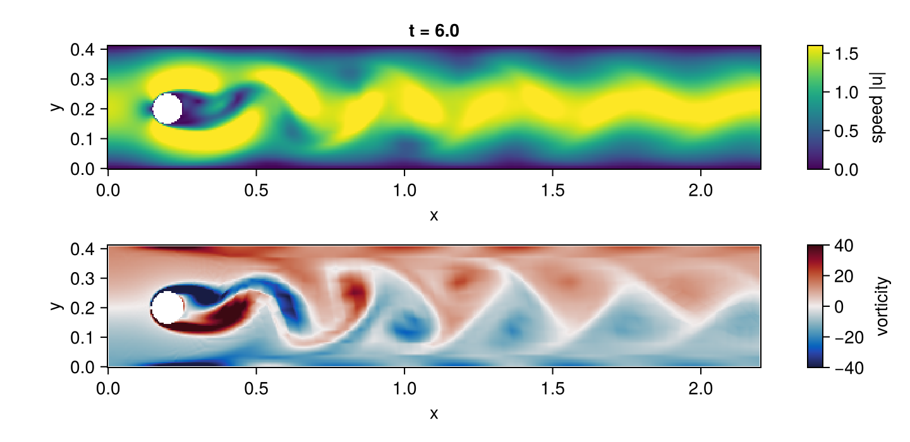

Navier–Stokes: flow past a cylinder
The DFG benchmark of Schäfer and Turek (1996), case 2D-1: steady incompressible flow at Reynolds number 20 past a cylinder of diameter 0.1 centred at (0.2, 0.2) in the channel [0, 2.2] × [0, 0.41], with a parabolic inflow of peak 0.3, no slip on the walls and the cylinder, and kinematic viscosity 10⁻³. It is a mixed saddle-point problem: the pressure has no equation of its own and needs an inf-sup-stable pair, here Q2/Q1 Taylor–Hood.
The script is examples/dfg_cylinder/dfg_cylinder.jl; the mesh generator (mesh.jl), the drag and lift functional (forces.jl) and a hand-written Ferrite solver used as an oracle (reference.jl) sit next to it. The core is ordinary strong-form ModelingToolkit:
@parameters ν Umax
@variables x y u(..) v(..) p(..)
Dt, Dx, Dy = Differential(t), Differential(x), Differential(y)
Ω = MeshDomain(dfg_channel_grid(; h = 0.04, hc = 0.0025)) # Gmsh, all quadrilaterals, curved cylinder
Γin, Γout, Γwall, Γcyl = boundarypiece.(Ω, (:inlet, :outlet, :walls, :cylinder))
U, V, P = u(t, x, y), v(t, x, y), p(t, x, y)
eqs = [
Dt(U) ~ Dx(ν * Dx(U)) + Dy(ν * Dy(U)) - U * Dx(U) - V * Dy(U) - Dx(P),
Dt(V) ~ Dx(ν * Dx(V)) + Dy(ν * Dy(V)) - U * Dx(V) - V * Dy(V) - Dy(P),
0 ~ Dx(U) + Dy(V),
]
inflow = (1 - exp(-t^2)) * 4Umax * y * (0.41 - y) / 0.41^2
bcs = [
u(t, Γin) ~ inflow, v(t, Γin) ~ 0, u(t, Γwall) ~ 0, v(t, Γwall) ~ 0,
u(t, Γcyl) ~ 0, v(t, Γcyl) ~ 0, p(t, Γout) ~ 0, u(0, x, y) ~ 0, v(0, x, y) ~ 0,
]
@named dfg = PDESystem(eqs, bcs, [(x, y) ∈ Ω, t ∈ Interval(0.0, 60.0)], [t, x, y], [U, V, P],
[ν => 1e-3, Umax => 0.3])
Q2, Q1 = Lagrange{RefQuadrilateral, 2}(), Lagrange{RefQuadrilateral, 1}()
disc = FEMDiscretization(Ω, t; spaces = Dict(u => Q2, v => Q2, p => Q1),
pairing = Dict(eqs[3] => p), natural = [Γout], initializealg = CheckInit())
prob = discretize(dfg, disc)
abstol = [d ? 1e-7 : 1e8 for d in prob.differential_vars] # pressure and Dirichlet rows out of error control
sol = solve(prob, DFBDF(linsolve = UMFPACKFactorization());
abstol, reltol = 1e-7)Vortex shedding at Reynolds number 100


The same formulation with the inflow of DFG case 2D-2 (peak 1.5, Reynolds number 100) is the second code block of the README, and the figure and the animation above are rendered by its third block, the plotting, with examples/ns_showcase.jl. They are committed copies in docs/src/assets, the same files the README links to; a test fails when the blocks change without them being regenerated, and the documentation build re-runs both blocks to check that they still run. The velocity is sampled on a regular grid with sol(ts, xs, ys; dv), which returns NaN inside the cylinder, and the vorticity is a central difference of the sampled velocity. The flow starts at rest, the wake behind the cylinder turns unstable and a von Kármán vortex street has formed by t = 6. It is a showcase, not a validated 2D-2 run: the mesh is the coarse h = 0.04 mesh of the steady case above and the tolerance is 10⁻⁶. The test suite checks only that the wake sheds with a Strouhal number between 0.25 and 0.35 (measured 0.28 to 0.31, against about 0.3 for the benchmark), not the benchmark's amplitudes or lift oscillation.
Formulation choices
- Outflow condition. PDEBase's strong-form analysis integrates only second-order terms by parts, so the pressure gradient is tested strongly and the natural outflow condition is
ν ∂ₙu = 0instead of the do-nothing conditionν ∂ₙu − p n = 0of the benchmark. The pressure level is fixed byp = 0on the outlet. The hand-written Ferrite solver gives the same drag, lift and pressure difference to seven digits with either formulation on five meshes from 5 000 to 149 000 unknowns. - Index-2 DAE. The continuity equation is paired with the pressure explicitly. The flow starts at rest and the inflow is ramped by
1 − exp(−t²), whose value and rate vanish att = 0, so the zero initial state is consistent andCheckInit()only verifies it. The default initialiser would solve the algebraic rows for the algebraic variables, and the continuity rows do not contain the pressure, so its Newton matrix would be singular in the pressure columns. The zero velocity is discretely divergence free; the pressure, an algebraic variable, starts at zero and needs no initial condition, since every residual row vanishes att = 0. The pressure and the Dirichlet rows are left out of the error control: the local error of an index-2 variable does not shrink with the step. - Steady state. 2D-1 is steady; the DAE is integrated to
t = 60, where the flow has settled to the solver tolerance, and the coefficients include the∂ₜuterm of the functional. - Linear solver. UMFPACK is named because LinearSolve 5.18's default sparse LU throws "snlu! requires the same sparsity pattern as the analyzed matrix" on these Newton matrices (and on Ferrite's own
ns_vs_diffeq.jltutorial). Naming it also removes the default's silent fall-back to sparse QR on a singular Newton matrix, which costs tens of gigabytes here; the example'scheck_solvedraises if the solve stops before its final time. UMFPACK's default has no iterative refinement and its residual grows above about 60k dofs (about 1e-12 at 62k, 2e-4 at 248k, on this example's matrices); it is accurate at the 16,430 dofs here. Above about 60k dofs useKLUFactorization()untilpivot_toleranceandstrategyare available in a released LinearSolve, thenUMFPACKFactorization(control = (; strategy = 3, irstep = 2)).
Drag and lift
The coefficients are the weighted residuals of the momentum equations (John 2004; Braack and Richter 2006): with w the finite-element function equal to e_k at the cylinder nodes and zero elsewhere, F_k = −∫ (∂ₜu·w + ν∇u:∇w + (u·∇)u·w − p ∇·w) dx and c = 2F/(Ū² D) with Ū = 0.2, D = 0.1. This volume form converges at twice the rate of the line integral of the discrete stresses.
Tolerance. The acceptance intervals of the benchmark paper, c_D ∈ [5.57, 5.59], c_L ∈ [0.0104, 0.0110] and Δp ∈ [0.1172, 0.1176] (reference values 5.57953523384, 0.010618948146 and 0.11752016697). The NavierStokes test group solves on a 16 430-unknown mesh and asserts the three intervals, and agreement with the hand-written Ferrite Newton solver on the same mesh to a relative 10⁻⁵. Benchmark (d) in benchmarks/navier_stokes repeats the solve on finer meshes and records the errors against the reference values.
This is the evidence that moves mixed saddle-point problems into Tier 1 of the supported equation classes.